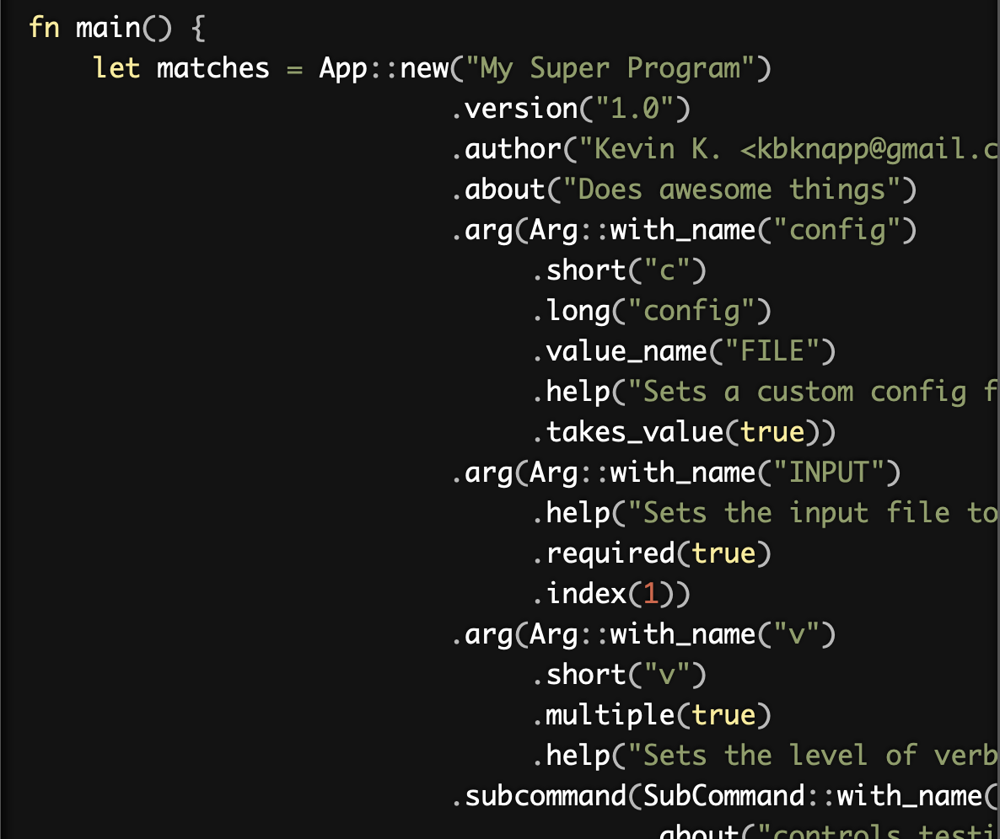

标准库提供了std::env::args()用来获取命令行的参数，第一个值是程序的名称，这和其它语言中的获取参数的方式类似:
1 2 3 4 5 6 7
| let args: Vec<String> = env::args().collect(); let query = &args[1]; let filename = &args[2]; println!("Searching for {}", query); println!("In file {}", filename);
|
但是在产品开发的过程中，我们需要比较多的程序参数，并且需要一定的规则和校验，这个时候我们就需要使用其它的一些库对这些参数进行解析，比如structopt库。
structopt可以方便的将命令行参数解析为一个struct。
下面是官方的一个例子，可以cargo run -- --help测试一下：
1 2 3 4 5 6 7 8 9 10 11 12 13 14 15 16 17 18 19 20 21 22 23 24 25 26 27 28 29 30 31 32 33 34 35 36 37 38 39 40 41 42 43 44 45 46
| use std::path::PathBuf; use structopt::StructOpt; #[derive(StructOpt, Debug)] #[structopt(name = "basic")] struct Opt { #[structopt(short, long)] debug: bool, #[structopt(short, long, parse(from_occurrences))] verbose: u8, #[structopt(short, long, default_value = "42")] speed: f64, #[structopt(short, long, parse(from_os_str))] output: PathBuf, #[structopt(short = "c", long)] nb_cars: Option<i32>, #[structopt(short, long)] level: Vec<String>, #[structopt(name = "FILE", parse(from_os_str))] files: Vec<PathBuf>, } fn main() { let opt = Opt::from_args(); println!("{:#?}", opt); }
|
我们定义一个struct:来保存命令行参数: Opt, 这个struct的定义的时候使用来宏来定义参数的一些属性。
然后通过一行代码let opt = Opt::from_args();就可以把命令行参数解析为Opt的一个实例。
官方库提供了很多的例子，可以用来了解和学习structopt的功能和使用方法。
structopt 使用作为参数的解析，但是通过宏的方式，大大简化了clap的使用难度。
首先我们看看structopt通过宏对上面的例子做了什么处理。
structopt 宏的花招
structopt 为 Opt 实现了 structopt::StructOpt trait：
1 2 3 4 5 6 7 8 9 10 11 12 13 14 15 16 17 18 19 20 21 22 23 24 25 26 27 28 29 30 31 32 33 34 35 36 37
| #[allow(unused_variables)] impl ::structopt::StructOpt for Opt { fn clap<'a, 'b>() -> ::structopt::clap::App<'a, 'b> { let app = ::structopt::clap::App::new("basic") .about("A basic example") .version("0.1.0"); Self::augment_clap(app) } fn from_clap(matches: &::structopt::clap::ArgMatches) -> Self { Opt { debug: matches.is_present("debug"), verbose: { |v| v as _ }(matches.occurrences_of("verbose")), speed: matches .value_of("speed") .map(|s| ::std::str::FromStr::from_str(s).unwrap()) .unwrap(), output: matches .value_of_os("output") .map(::std::convert::From::from) .unwrap(), nb_cars: matches .value_of("nb-cars") .map(|s| ::std::str::FromStr::from_str(s).unwrap()), level: matches .values_of("level") .map(|v| { v.map(|s| ::std::str::FromStr::from_str(s).unwrap()) .collect() }) .unwrap_or_else(Vec::new), files: matches .values_of_os("file") .map(|v| v.map(::std::convert::From::from).collect()) .unwrap_or_else(Vec::new), } } }
|
fn clap<'a, 'b>() -> clap::App<'a, 'b> 生成一个clap::App,这个App的名称就是我们定义的basic,我们把没有定义about属性，所以这里它取注释作为about描述信息,这是clap库使用的姿势，clap应用定义一些属性和参数：
。
但是我们使用structopt并不是要创建一个clap应用，只是用来解析参数，映射成一个struct,所以这里创建的clap app只是一个辅助处理参数的对象。
在clap()方法中还调用了augment_clap(app)函数，这个函数在下面定义，定义了App的参数。
fn from_clap(matches: &ArgMatches) -> Self是将clap的App对象中的参数映射成Opt的字段。
比如speed字段：
1 2 3 4
| speed: matches .value_of("speed") .map(|s| ::std::str::FromStr::from_str(s).unwrap()) .unwrap(),
|
配置clap app Args的方法在函数augment_clap中:
参数的属性配置依照Opt中各个字段的定义而生成。
这样，当我们在代码中调用let opt = Opt::from_args()时候，实际调用from_clap(&Self::clap().get_matches())
整体可以看到，structopt其实就是把宏的各种定义转换成clap的配置，我们可以学习它的宏的复杂的运用。
属性
你定义的struct会映射成 clap::App, 而这个struct的非子命令字段会映射成clap::Arg。
通过属性#[structopt(...)]进行设置，所以让我们看看它的属性。
structopt的属性可以分为两类:
- structopt自己的
magical method： structopt自己使用，attr = ["whatever"]或者attr(args...)格式
raw attributes: 映射成clap::Arg/App的方法调用， #[structopt(raw(...))]格式
raw 属性/方法
属性和 clap::App/clap::Arg一一对应。
格式：
#[structopt(method_name = single_arg)] 或者 #[structopt(method_name(arg1, arg2))]
magical 属性/方法
比如name、version、no_version、author、about、short、long、rename_all、parse、skip、flatten、subcommand。
详细信息可以参考： Magical methods。
类型
定义了一些内置类型，以及对应的clap方法。
- bool:
.takes_value(false).multiple(false)
- Option<T: FromStr>:
.takes_value(true).multiple(false)
- Option<Option<T: FromStr>>:
.takes_value(true).multiple(false).min_values(0).max_values(1)
- Vec<T: FromStr>:
.takes_value(true).multiple(true)
- Option<Vec<T: FromStr>:
.takes_values(true).multiple(true).min_values(0)
- T: FromStr:
.takes_value(true).multiple(false).required(!has_default)
子命令
1 2 3 4 5 6 7 8 9 10 11 12 13 14 15 16 17 18 19 20 21 22 23 24 25
| #[derive(StructOpt)] #[structopt(about = "the stupid content tracker")] enum Git { Add { #[structopt(short)] interactive: bool, #[structopt(short)] patch: bool, #[structopt(parse(from_os_str))] files: Vec<PathBuf> }, Fetch { #[structopt(long)] dry_run: bool, #[structopt(long)] all: bool, repository: Option<String> }, Commit { #[structopt(short)] message: Option<String>, #[structopt(short)] all: bool } }
|
定制字符串解析
如果类型没有实现FromStr trait, 或者你就想定制解析方式，你可以设置自定义的解析方法。
更多的信息可以查看structopt的文档doc.rs/structopt。
在开发cli/terminal应用程序的时候，如果你不想这种声明式的获取参数的方式，那么你可以直接使用clap库, 这个库功能强大，也被广泛使用。
也有一些基于structopt的扩展库：
paw将rust main函数转换成c风格的带传入参数的main函数，也可以结合structopt使用：
1 2 3 4 5 6 7 8 9 10 11 12 13 14 15 16 17 18 19 20 21 22 23
| use std::io::prelude::*; use std::net::TcpListener; #[derive(structopt::StructOpt)] struct Args { #[structopt(short = "p", long = "port", env = "PORT", default_value = "8080")] port: u16, #[structopt(short = "a", long = "address", default_value = "127.0.0.1")] address: String, } #[paw::main] fn main(args: Args) -> Result<(), std::io::Error> { let listener = TcpListener::bind((&*args.address, args.port))?; println!("listening on {}", listener.local_addr()?); for stream in listener.incoming() { stream?.write(b"hello world!")?; } Ok(()) }
|